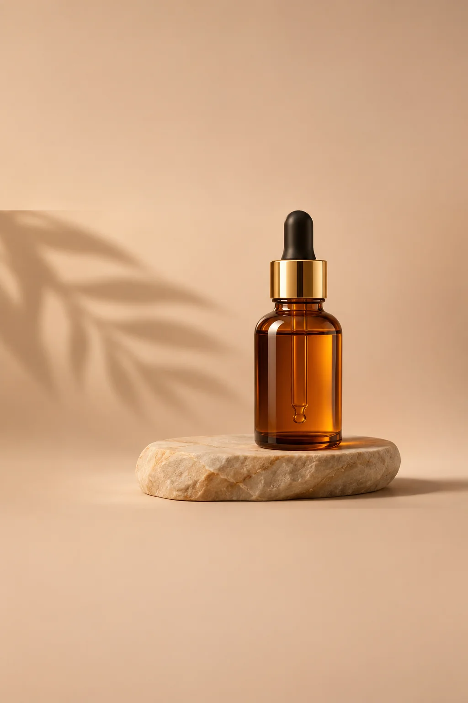

Serum launch
Headline + CTA layers, launch offer
A touch of nature
Skincare still life, calm palette
Social post: questions
What sizes do the social templates export?
Any, the canvas size is yours. Square 1:1, portrait 4:5 and 9:16 story presets are built into the composer.
Can I match my brand colors?
Yes, store colors and fonts in a Brand Kit; the editor applies them to any template layer.